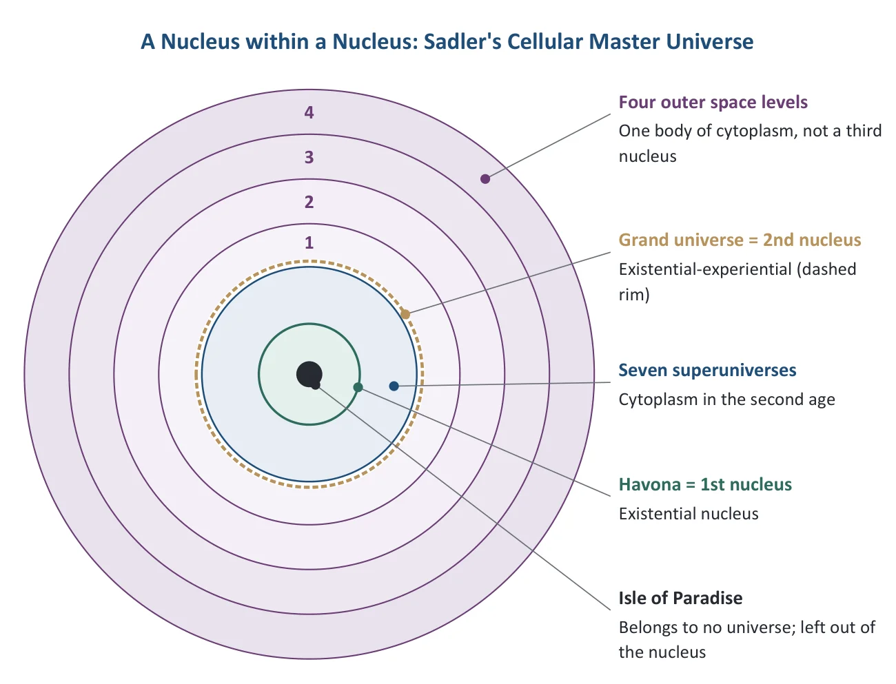

Original : L’Histoire absonite, chapitre IV, « Univers nucléaires et cytoplasmiques » (pp. 57–61)
Ayant achevé l’Histoire finie, Sadler ouvre la deuxième grande division de son livre, l’Histoire absonite, et introduit un nouvel outil d’interprétation : le maitre univers conçu comme un organisme vivant et en croissance. De même qu’une cellule a un noyau et le cytoplasme qui l’entoure, de même le maitre univers aurait un noyau central enveloppé d’un cytoplasme environnant. En utilisant quatre critères pour identifier un noyau, Sadler désigne Havona comme le premier univers nucléaire et le grand univers achevé comme le second. Les quatre niveaux de l’espace extérieur, conclut-il, ne forment pas un troisième noyau ; ensemble, ils constituent une seule masse de cytoplasme.
Sadler donne à la deuxième histoire de son livre le nom d’« Histoire absonite ». Son sujet est double : l’évolution des univers de l’espace extérieur, et la croissance continue du grand univers jusqu’à ce que, sous la souveraineté de Dieu l’Ultime, il soit enfin uni à ces créations extérieures en un seul tout. Des six chapitres qui composent cette histoire dans l’original, les trois premiers sont traités ici dans les chapitres 8 à 10 et les trois derniers dans les chapitres 11 à 13. L’histoire s’ouvre avec la première entrée dans le niveau d’espace primaire et se clôt lorsque Dieu l’Ultime émerge enfin pleinement. Alors que l’Histoire finie couvrait un seul âge, celle-ci en embrasse quatre.
À ce point, Sadler introduit une paire de termes, noyau et cytoplasme. Si le maitre univers doit être considéré comme un grand organisme en voie de croissance, alors il devrait y avoir en son centre un noyau et, autour de ce noyau, un cytoplasme.
Dans une cellule, le noyau est l’organe qui dirige la croissance et la reproduction et transmet les caractères héréditaires ; le cytoplasme est tout ce qui, dans la cellule, n’est pas le noyau. Sadler l’illustre par un œuf : le jaune correspond au noyau, le blanc au cytoplasme. Le noyau est petit, et pourtant il porte l’héritage au centre ; le cytoplasme est étendu, et pourtant il croît en recevant ce que le noyau lui communique.
La proposition de Sadler est que le maitre univers a deux noyaux. L’un est Havona, le noyau existentiel. L’autre est le grand univers, Havona joint aux sept superunivers, qui forme un noyau existentiel-expérientiel.
Sadler commence par écarter l’Ile du Paradis comme noyau possible, puisque le Paradis n’appartient à aucun univers, pas même au maitre univers. Le niveau spatial de Havona, en revanche, vient au premier rang des niveaux spatiaux du maitre univers, et l’âge de Havona ouvre la succession des âges de l’univers. Pour ces raisons, Sadler tient Havona pour le noyau du grand univers.
Qu’est-ce qui permettrait d’appeler noyau un univers donné ? Sadler expose quatre critères, et ils portent l’argument de tout le chapitre.
La première est une nature unique. Havona diffère des superunivers au niveau même de sa nature. Son origine est éternelle et sa perfection existentielle. Les superunivers, en revanche, ont eu leur origine dans le temps ; ils commencent imparfaits, avancent lentement vers la perfection par l’évolution et seront finalement parfaits au sens expérientiel.
La deuxième est l’apparition d’une Déité. L’apparition de l’éternel Havona est liée à l’apparition d’une nouvelle Déité, l’Esprit Infini. Le Livre d’Urantia rapporte cette simultanéité sur le témoignage de l’Esprit lui-même.
Et il confirme simplement le fait que l’univers central avec tout ce qui lui appartient est devenu éternel en même temps que lui, l’Esprit Infini, atteignait la personnalité et l’existence consciente.8:1.8
La troisième est la formation d’une Trinité. L’apparition de l’Esprit Infini a ouvert la voie à l’union des trois Déités en Trinité du Paradis. L’émergence de Havona, l’émergence de la troisième Déité et la formation de la Trinité coïncident toutes en un seul « moment ».
La quatrième est la transmission. Un noyau transmet ses caractéristiques vers l’extérieur. Dans le cas de Havona, le trait héréditaire de la perfection divine atteint les superunivers périphériques, le cytoplasme, par l’intermédiaire des créateurs et des administrateurs d’origine Paradis-Havona qui servent dans les créations du temps et de l’espace. Sadler cite le ministère des Créateurs Suprêmes comme un exemple clair.
Mesuré à ces quatre marques, Havona semble tout à fait clairement être le noyau du grand univers. Est-il alors aussi le noyau de tout le maitre univers ? Sadler répond que non. Puisque le grand univers achevé déclenchera une suite d’évènements ressemblant à celle qui a accompagné l’apparition de Havona, c’est le grand univers qui sert de noyau à la création du maitre univers.
Sadler appelle le grand univers le « Second Univers Nucléaire ». Pour mettre cette affirmation à l’épreuve, il faut comparer Havona nouvellement apparu au grand univers dans son état achevé, c’est-à-dire une fois que la lumière et la vie se sont établies sur tous les sept superunivers et que l’Être Suprême a émergé comme une Déité avec laquelle un plein contact peut être établi.
Quant à la nature, le grand univers achevé est fondamentalement différent des univers de l’espace extérieur. Il est l’arène spatiale dans laquelle l’Être Suprême achève Sa croissance expérientielle, et aucune autre région du maitre univers ne peut donc lui ressembler. Toute création qui vient après est post-suprême et dépourvue d’expérience finie.
Quant à l’apparition d’une Déité, l’achèvement du grand univers est lié à l’émergence d’une nouvelle Déité, l’Être Suprême. Quant à la Trinité, l’émergence finale du Suprême rend possible la première Trinité expérientielle. Ses membres réunissent l’Être Suprême et deux corps, les Maitres Architectes et les Créateurs Suprêmes ; puisque le Suprême ne peut y fonctionner avant d’avoir pleinement émergé, sa formation effective doit aussi attendre que le grand univers soit achevé. Le Livre d’Urantia fait la même remarque.
2. Le Suprême ne pourrait guère fonctionner dans l’Ultime Trinité avant d’avoir atteint sa complète actualité de statut universel, et cependant l’Ultime Trinité est dès maintenant une réalité qualifiée117:7.4
Quant à la transmission, le trait héréditaire du grand univers est l’« expérience finie ». Il est porté aux univers cytoplasmiques de l’espace extérieur par l’Être Suprême, par la première Trinité expérientielle et par la multitude des finalitaires et des autres êtres qui serviront dans ces royaumes.
| Marque | Havona (premier noyau) | Grand univers achevé (second noyau) | Niveau d’espace primaire |
|---|---|---|---|
| Nature unique | Origine éternelle, perfection existentielle | La seule arène où le Suprême a grandi | Aucune différence fondamentale avec les autres niveaux extérieurs |
| Apparition d’une Déité | L’Esprit Infini | L’Être Suprême | Aucune nouvelle Déité |
| Formation d’une Trinité | La Trinité du Paradis | La première Trinité expérientielle | Aucune nouvelle Trinité |
| Trait transmis | La perfection divine | L’expérience finie | Prolonge simplement le niveau précédent |
La conclusion de Sadler est donc double : Havona est le premier univers nucléaire, situé au cœur du grand univers ; et ce tout plus vaste est à son tour le second univers nucléaire, situé au cœur du maitre univers. Pour reprendre l’image de l’œuf, c’est comme si un germe se trouvait dans le jaune, et que tout le jaune fût à son tour enveloppé par le blanc.
Une question naturelle s’ensuit. Havona étant le premier noyau et le grand univers le second, le niveau d’espace primaire, une fois pleinement développé, s’unira-t-il au grand univers pour former un troisième noyau plus grand ? Ici encore Sadler répond que non, et il met cette réponse à l’épreuve des mêmes quatre marques.
Quant à la nature, les quatre niveaux de l’espace extérieur ne diffèrent pas les uns des autres à la manière dont Havona diffère de toute création ultérieure, ou le grand univers des univers extérieurs. Les univers des quatre niveaux sont des univers post-suprêmes, organisés après que l’Être Suprême a pleinement émergé. Les auteurs du Livre d’Urantia observent de même que ces univers n’ont aucune part à l’évolution du Suprême.
Et beaucoup d’entre nous spéculent sur la mission des réserves de mortels ascendants et rendus parfaits du Corps de la Finalité qui s’accumulent progressivement. En association avec les six corps similaires de recrutement, cette mission pourrait consister à administrer les univers extérieurs dans un effort pour compenser leurs déficiences expérientielles découlant de leur non-participation à l’évolution temporelle-spatiale de l’Être Suprême.31:10.13
Les autres marques donnent le même résultat. Aucune nouvelle Déité n’apparait lorsque le niveau d’espace primaire est achevé. Sans nouvelle Déité expérientielle, il ne peut y avoir de nouvelle Trinité expérientielle. Et, sans nouvelle Déité ni nouvelle Trinité pour porter un trait vers l’extérieur, chaque niveau successif semble simplement prolonger et agrandir le précédent. Les niveaux d’espace secondaire et tertiaire donnent le même verdict.
Sadler propose donc que les quatre niveaux de l’espace extérieur forment une seule unité cytoplasmique dont le noyau est le grand univers.

Le Livre d’Urantia emploie aussi le mot « noyau », mais pas tout à fait comme Sadler.
Le système Paradis-Havona, l’éternel univers encerclant l’Ile éternelle, constitue le noyau parfait et éternel du maitre univers.12:1.11
Le Livre d’Urantia appelle le Paradis la « gigantesque Ile nucléaire de stabilité absolue » [14:0.1] et, comme on l’a cité plus haut, parle du système Paradis-Havona dans son ensemble comme du noyau du maitre univers. Dans le texte, « noyau » désigne le centre de la disposition spatiale et de la gravité. Chez Sadler, selon l’analogie biologique, il désigne un centre de croissance qui transmet ses caractéristiques. Exclure le Paradis du noyau et appeler le grand univers achevé noyau du maitre univers sont des définitions faites à l’intérieur de cette analogie. Il vaut mieux les lire non comme une contestation du texte, mais comme un accent différent mis sur le même mot.